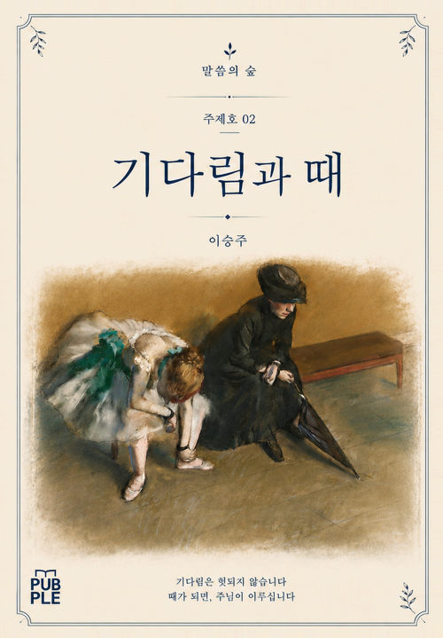
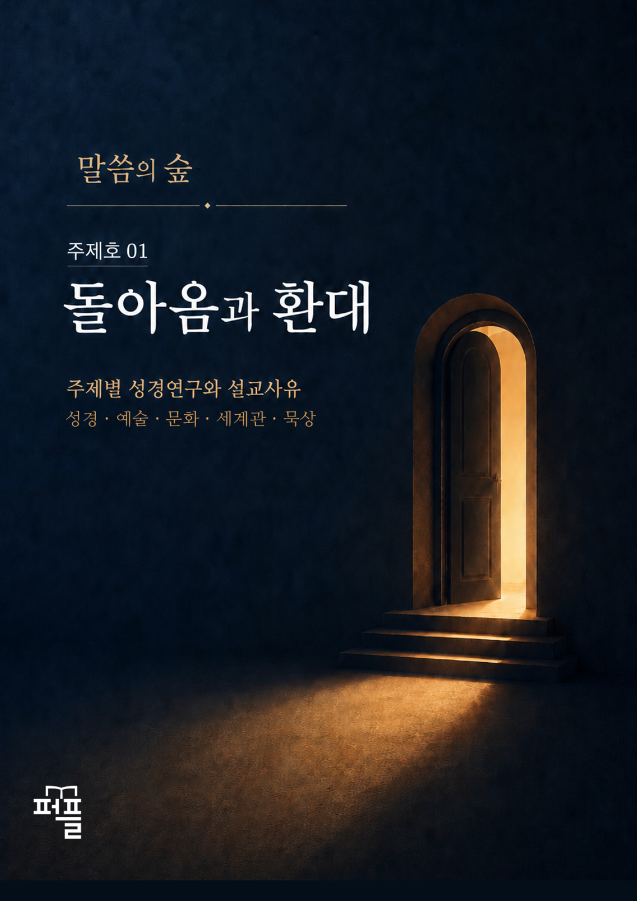
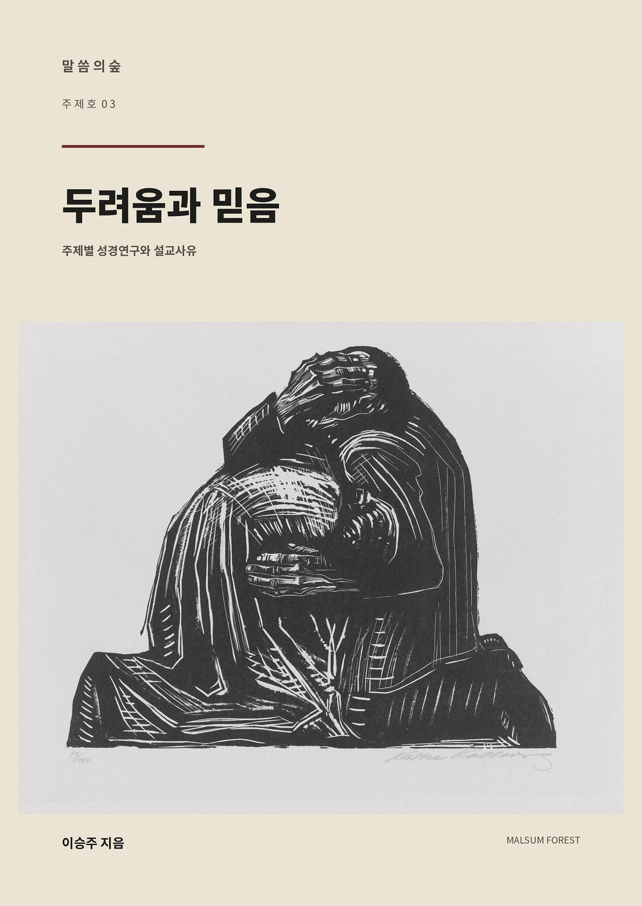

Featured Book
말씀의 숲 주제호 02
기다림과 때
주제별 성경연구와 설교사유
《말씀의 숲》 주제호 02는 전도서 3장을 비롯한 여러 성경 본문을 따라, 인간이 시간 속에서 무엇을 알 수 있고 무엇을 알 수 없는지, 그리고 기다림의 시간을 어떻게 살아갈 것인지를 살펴봅니다.
- 지은이
- 이승주
- 발행일
- 2026. 09. 03
- 발행처
- 퍼플
- 분량
- 115쪽
Books
말씀의 숲은 오늘을 살아가는 이들을 위해
다양한 시선과 주제로, 더 깊고 더 넓은 이야기를 전합니다.

Selected Books



Series
한 권의 책이
다음 이야기를 여는 작은 빈터가 되기를.